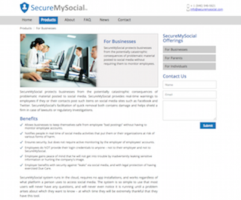
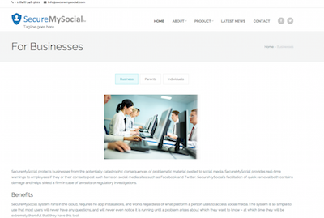
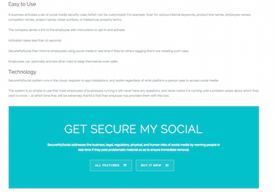
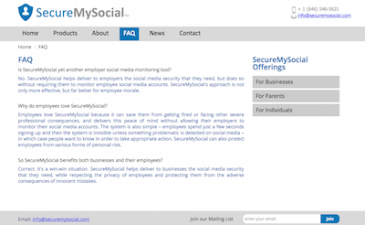
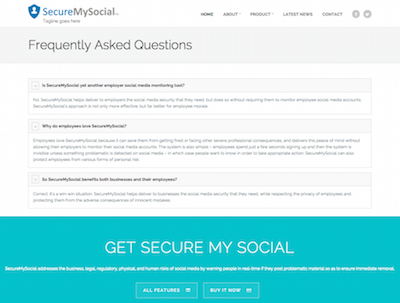

Website Redesign: SecureMySocial
{kind=link}
Old SMS Homepage
Objective
The focus of this project was to give SecureMySocial's old website a complete modern and sleek look; the aim was to reorganize and present content concisely and attractively while effectively maintaining and conveying the SecureMySocial message.
{kind=link}
Old SMS Business Page
The Story
After some research on other professional business website and determining the type of audience SecureMySocial would attract, I opted for an image carousel to display information for the three audience: businesses, parents, and individuals.
 {kind=link}
{kind=link}
New SMS Business Page
Challenges
The freedom of redesigning this website was what made it a fun yet challenging task. To start, I knew that most websites opt for a long, single page scroll layout with call to actions leading to other heavy contents. The other main issue that I wanted to address was how the information was organized and displayed. Also, since the client wanted to keep their logo, I decided to stick to a similar color scheme and worked my way around that.
{kind=link}
Old SMS FAQ Page
In the FAQ section, instead of displaying all questions and answers, I wanted an accordion to help group and display FAQ for users to quickly navigate the page.
{kind=link}
New SMS FAQ Page
Final Product
After addressing all the concerns above, I also added an additional feature to the webstie: the blog. I went with Blogger as a blogging platform for the client to use and went into Blogger to modify the default layout to match the website's current design.